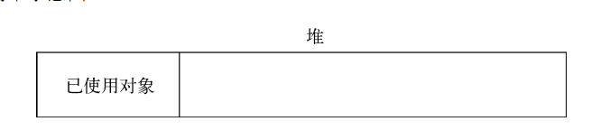
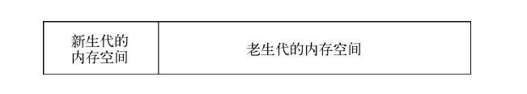
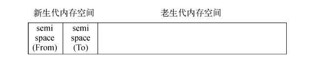
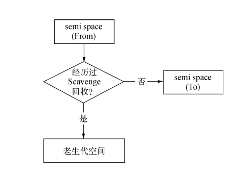
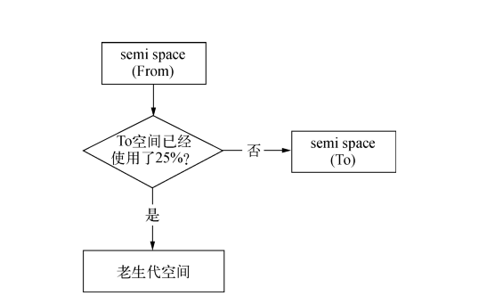
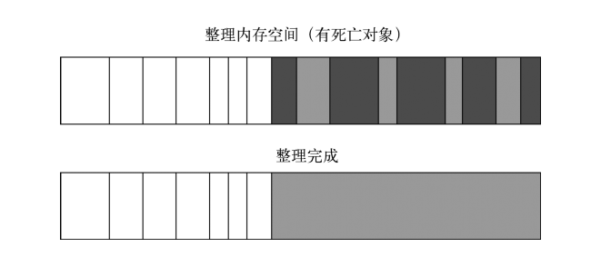
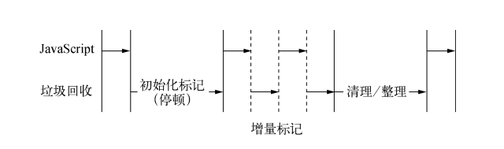

内存控制
为什么要关注内存？
JavaScript的应用场景已经延展到了服务端
充分理解语言特性和运作机理，写出来的代码更加优雅
v8
是一个用C++编写的JavaScript and WebAssembly引擎，会编译、执行JavaScript, WebAssembly代码
跨平台、单独运行、可以嵌入到其他C++程序里
会管理内存，垃圾回收
源码：https://github.com/v8/v8
v8的内存限制
一般后端语言基本没有内存上的限制，v8却只能使用部分系统内存
比如：64位系统下约为1.4GB，32位系统下约为0.7GB
win7 64位 = 1136000000 1.05G(chrome 70)
iMac = 2197815296 2.04G(chrome 77)
v8的内存分配
在v8中，所有的JavaScript对象都是通过堆来分配的
在node中查看内存使用状况 process.memoryUsage();
{
rss: 23027712,
heapTotal: 9682944,
heapUsed: 5809848,
external: 8770
}
heapTotal: 9682944
heapUsed: 5809848
是v8的内存使用状况
heapTotal 已申请到的堆内存
heapUsed 已经使用的堆内存
external: 8770
v8管理的绑定到JavaScript对象上的c++对象内存
rss: 23027712
Resident Set Size，即进程常驻内存
rss包括了stack、heap、code segment

heap里存放的是objects、strings、closures
Variables 存在stack里
实际可执行JavaScript代码存在code segment里
v8垃圾回收机制
heap示意图
v8的主要垃圾回收算法
内存基于分代式回收机制，分为新生代和老生代
新生代是指存活时间较短的对象，老生代是指存活时间较长的对象，或者常驻内存对象
scavenge算法
将堆内存一分为二，每一个空间称之为semispace。只有一个是处于使用中，另一个处于闲置中。 使用的称为From空间，闲置的称为To空间。 进行回收时，将From空间中存活的对象复制到To空间，那些非存活的对象将被释放。完成后From空间和To空间进行互换。 这是一种以空间换取时间的算法。
对象的晋升
在复制移动的过程中，将那些存活周期长的对象，移动到老生代heap中的过程称之为晋升
条件一：对象是否经历过一次scavenge算法
条件二：To空间是否已经使用超过25%
对象晋升后，在老生代heap中将接受新的算法来执行垃圾回收
Mark-Sweep
标记清除，遍历所有对象，对存活对象进行标记，随后将未标记的对象清除

最大的问题是进行一次标记清除后，会出现内存片段不连续的问题
Mark-Compact
标记整理，在整理过程中，将对象都往一端移动
移动了对象
增量式垃圾回收
垃圾回收会暂停JavaScript进行，垃圾回收的时间越长，页面越卡顿（动画）
前三种GC方法都会导致JavaScript进程全停顿
查看垃圾回收日志的方式主要是在启动时添加 --trace_gc 参数。
至于V8为何要限制堆的大小，表层原因为V8最初为浏览器而设计，不太可能遇到用大量内存的场景。 对于网页来说，V8的限制值已经绰绰有余。深层原因是V8的垃圾回收机制的限制。 以1.5GB的垃圾回收堆内存为例，V8做一次小的垃圾回收需要50毫秒以上，做一次非增量式的垃圾回收甚至要1秒以上。 这是垃圾回收中引起JavaScript线程暂停执行的时间，在这样的时间花销下，应用的性能和响应能力都会直线下降。
内存泄漏
该被垃圾回收的对象没有被回收，导致内存持续增长，直至超过上限后，导致程序崩溃退出
全局变量（常驻的内存）
缓存
作用域未释放
XX积压
从代码上来避免内存泄漏问题
了解作用域
避免使用全部变量
合理的使用闭包
合理使用缓存，或者高效的缓存
过期策略、进程外的高效的缓存库（Redis）
队列的积压等
内存泄漏排查
node-heapdump
chrome memory分析
大内存的读取
stream, buffer